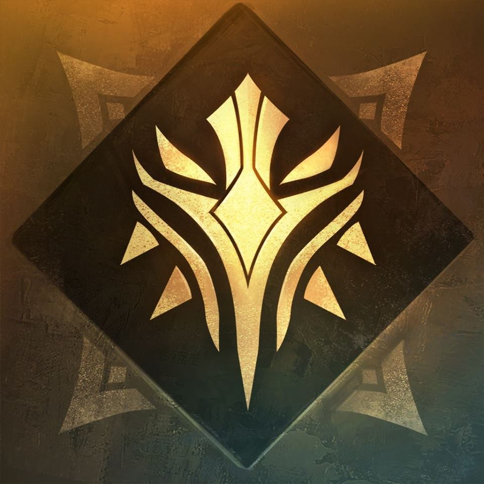

Sdorica 角色關鍵字篩選
Sdorica 角色關鍵字篩選
角色類型：
金位
黑位
白位
行動類型：
治療
疊盾
基礎傷害
破甲傷害
穿透傷害
純狀態
斬殺
作用對象：
指定單體
隨機單體
自身
全體
首位
末位
條件對象
雙方
我方
敵方
首位以外
增益減益：
強化
弱化
易傷
減傷
靈巧
再生
撕裂
轉盾
盾轉
戰意
獨有狀態
獨有疊層
移除魂芯
重整版面
冷卻增加
冷卻歸零
正面狀態
負面狀態
條件增傷
型態切換
歸零
額外觸發
被動/參謀相關：
死亡
條件觸發
主動
被動
查詢